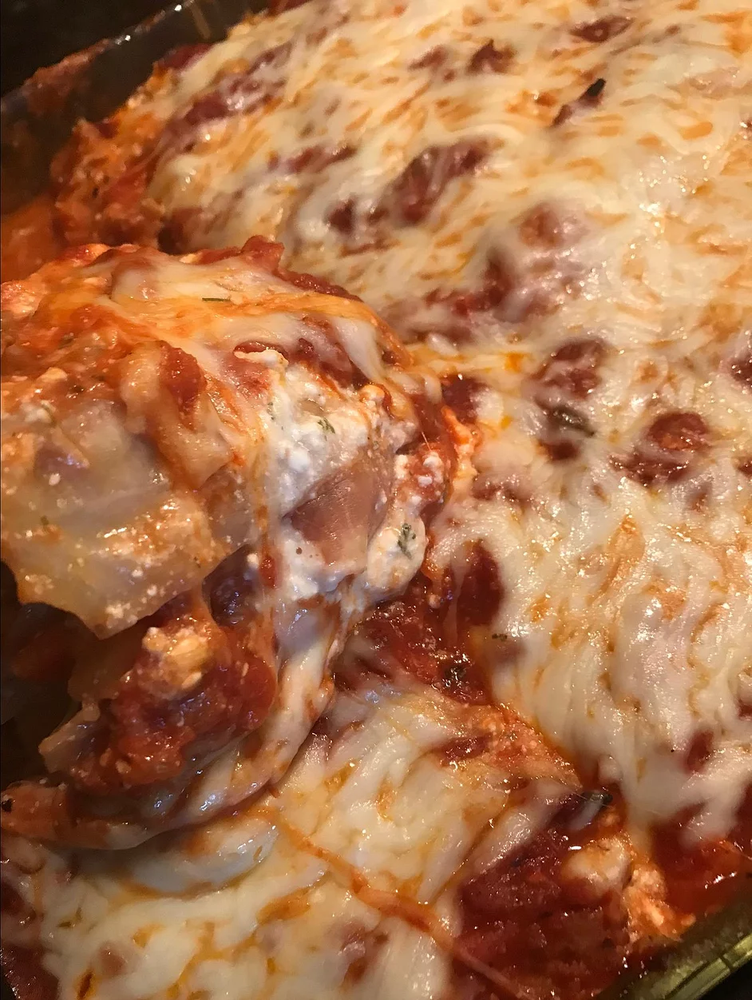

Cabbage Lasagna

Description
This recipe is perfect for those days when you're craving a cheesy and comforting meal.
You could make this dish at the end of the week and not have to worry about cooking for
the rest of the weekend! It uses plenty of vegetables so you can trick the kids into eating it.
Make sure to brown the beef really well to ensure you get a flavorful filling. Make sure to drain
your cabbage very well to keep your sauce nice and thick.
Ingredients
- 1 lb. lean ground beef
- 1 medium onion, chopped
- 1 Tbsp minced garlic
- 1/2 cup carrots, grated
- 4 oz mushrooms, chopped
- 1 lb. canned tomatoes
- 1 Tbsp dried basil
- 1 tsp white sugar
- 2 1/2 tsp salt (divided)
- 1/2 tsp thyme
- 1/4 tsp nutmeg
- 1 head cabbage
- 24 oz low-fat cottage cheese
- 1 cup Parmesan cheese, grated (divided)
- 1 Tbsp parsley
- 1 tsp oregano
- Cooking spray
- 2 cups part-skim mozzarella cheese, grated
Steps
- Heat a large skillet over medium-high heat. Cook
and stir ground beef, onion, and garlic in the
hot skillet until meat is browned and crumbly,
5 to 7 minutes. Drain and discard grease. Add
carrots and mushrooms. Add tomatoes and break
up using a fork. Add basil, sugar, 1 teaspoon
salt, thyme, and nutmeg. Reduce heat and simmer
meat sauce for 30 minutes.
- Meanwhile, bring a large pot of water to a boil.
Immerse cabbage in the boiling water and carefully
break off leaves. Cook until leaves are limp, about
3 minutes. Drain.
- Combine cottage cheese, 1/2 cup Parmesan cheese, parsley,
1 1/2 teaspoon salt, and oregano in a bowl and set aside.
- Preheat oven to 350 degrees F (175 degrees C). Coat a 9x13-inch
baking pan with cooking spray and place a layer of cooked cabbage
leaves flat in the bottom.
- Reserve 1/4 cup of meat sauce. Layer half the remaining sauce on
top of the cabbage leaves in the baking pan. Layer half of the
cottage cheese mixture followed by half of the mozzarella cheese.
Add a second layer of cabbage leaves, the rest of the meat sauce,
the remaining cottage cheese mixture, and mozzarella cheese. Sprinkle
reserved 1/4 cup meat sauce on top and finish with 1/2 cup Parmesan cheese.
- Bake in the preheated oven for 45 minutes. Remove from the oven and let
cool for 15 minutes before serving.
Check out the original recipe here